Nors vampyro konceptas kurį adaptavo anime yra tiesiogiai nukopijuotas iš europietiškų legendų,
japonų mitologijoje netrūksta kraugeriškų būtybių.
Rokurokubi - monstras kuris dieną praleidžia kaip normalus žmogus, o naktį dislokuoja savo galvą ir
paverčia savo kaklą virve. Jis taip pat pasižymi kraugeryste. Anime pasaulyje šis monstras pasirodė
tik kartą, kažkokiame magiškų mergaičių šou "Yes! Pretty Cure 5
GoGo!" ir turėjo nežymia šalutinę
rolę. Matomai net tie bepročiai kurie kuria konceptus naujom anime prisibijo adaptuoti šį monstrą.
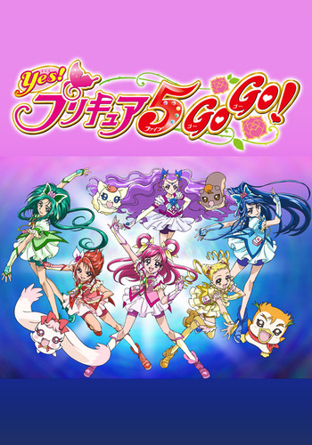
Yes! Pretty Cure 5 GoGo viršelis. Net nepasakysi kokios baisybės slepiasi viduje
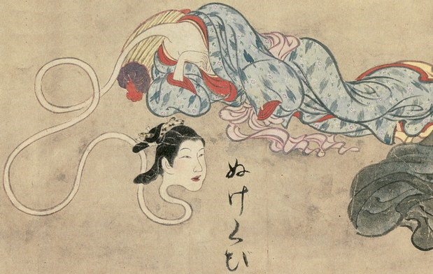
Rokurokubi piešinys, XVII a.
Anime vampyrių pavyzdžiai
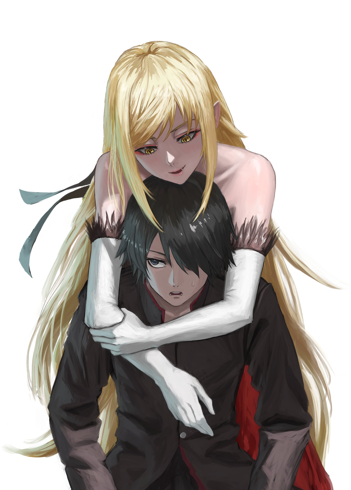
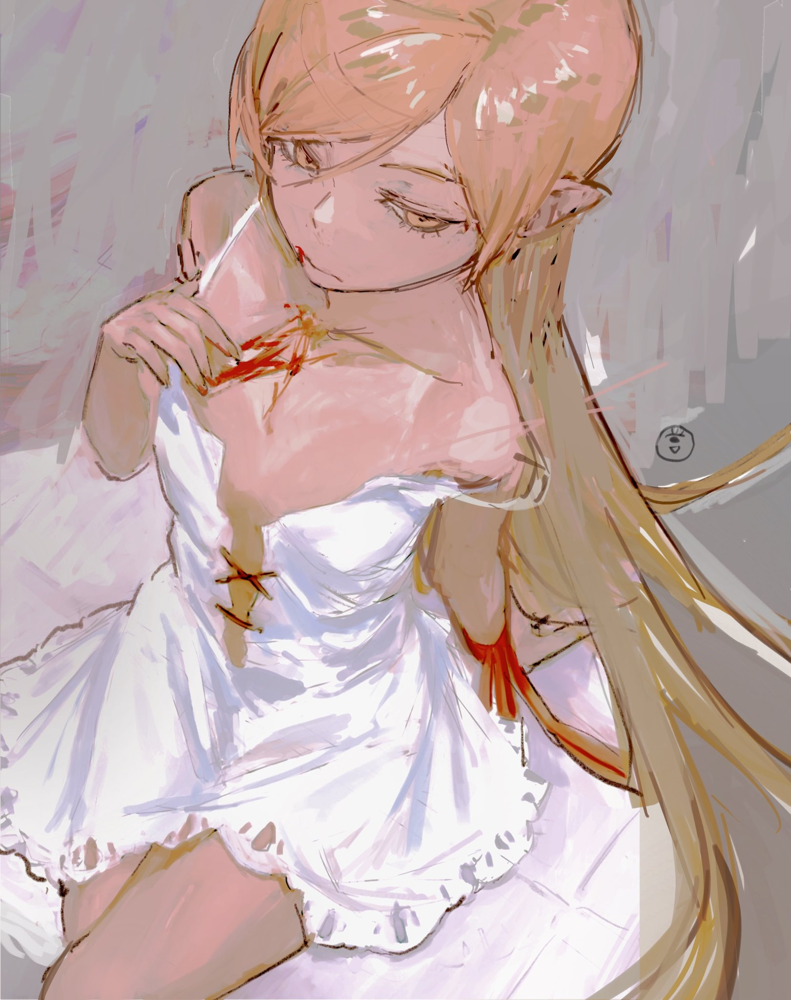
Oshino shinobu (Monogatari frančizė) yra vardas kurį jai
suteikė jos
naujasis
valdovas.
Anksčiau
ji buvo žinoma kaip Kiss-Shot Acerola-Orion Heart-Under-Blade, kurį jai suteikė jos
senoji
valdovė prieš daugmaž 550 metų. Jos distinktyvi savybė yra galimybė keisti matomą
amžių
priklausomai nuo turimos energijos. Tai yra plėšri vampyrė kuri medžioja žmones bent
jau
iki
tam
tikrų įvykių istorijoje po kurių ji tampa "prijaukinta" vampyre. Kairėje matote
Oshino
skirtingose formose
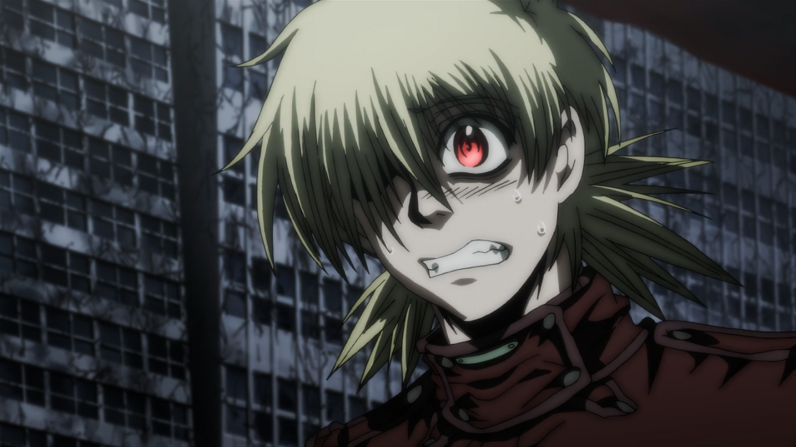
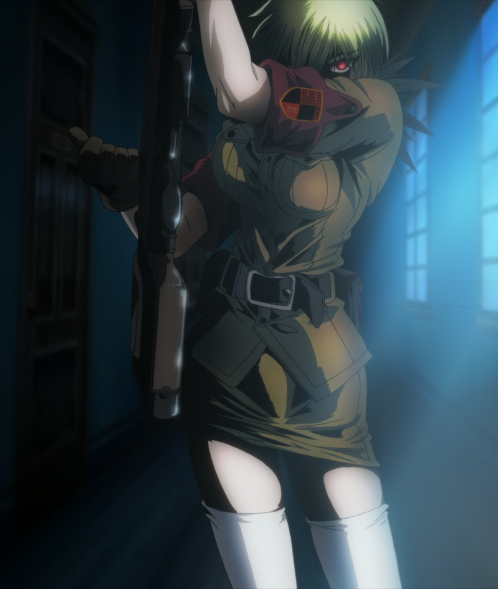
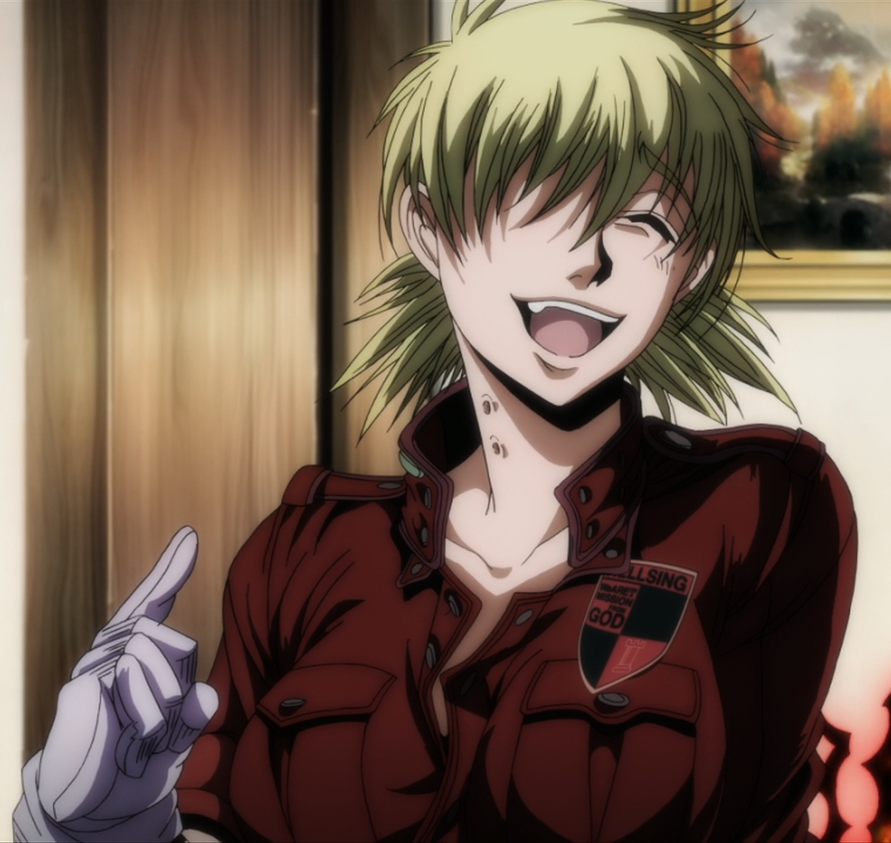
Seras Victoria yra palyginti jauna vampyrė, apie 25 metų
amžiaus. Ji tapo vampyre ne
savo
noru ir
dabar privalo tarnauti slaptai britiškai organizacijai kovodama su kitais plėšriais
vampyrais ir
kartais su vatikano agentais. Ji pasižymi nežmoniškomis juslėmis ir stiprumu. Tai
yra
prijaukinto tipo vampyrė tarnaujanti žmonėms. Jos valdovas yra Drakula, dabar
žinomas
vardu
Alucard.
 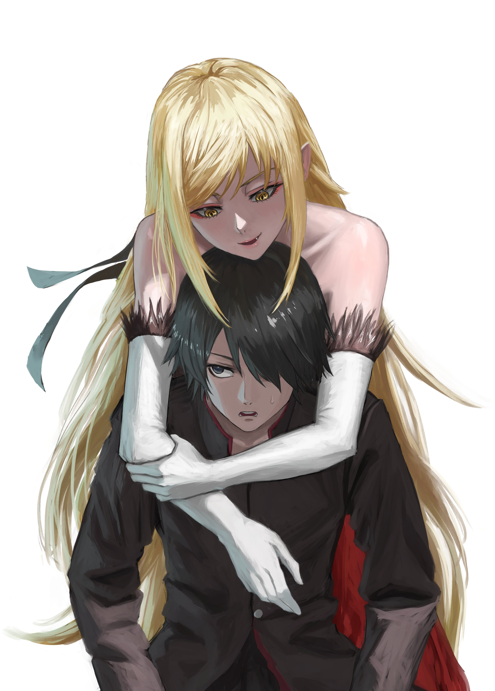
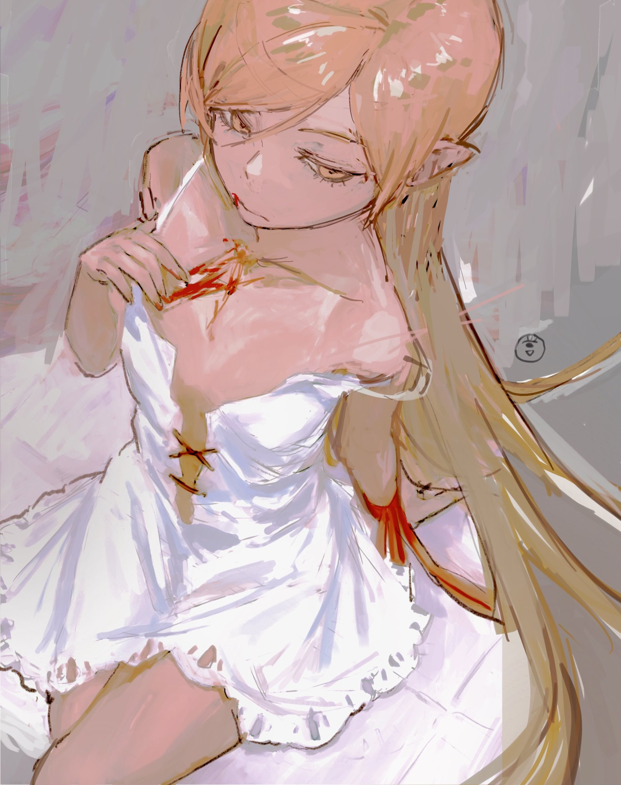
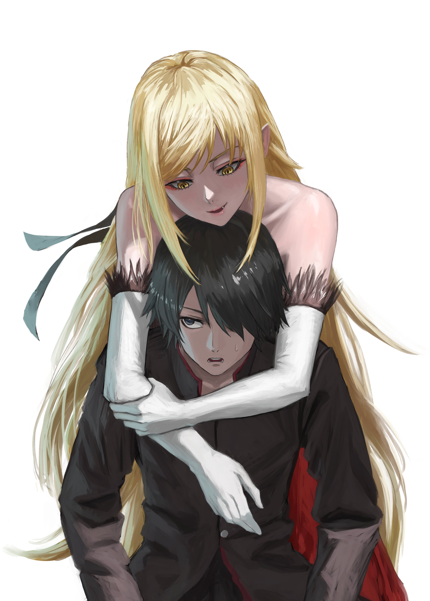
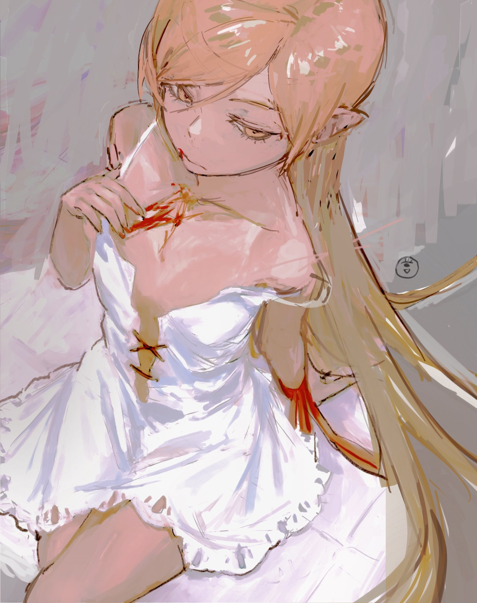